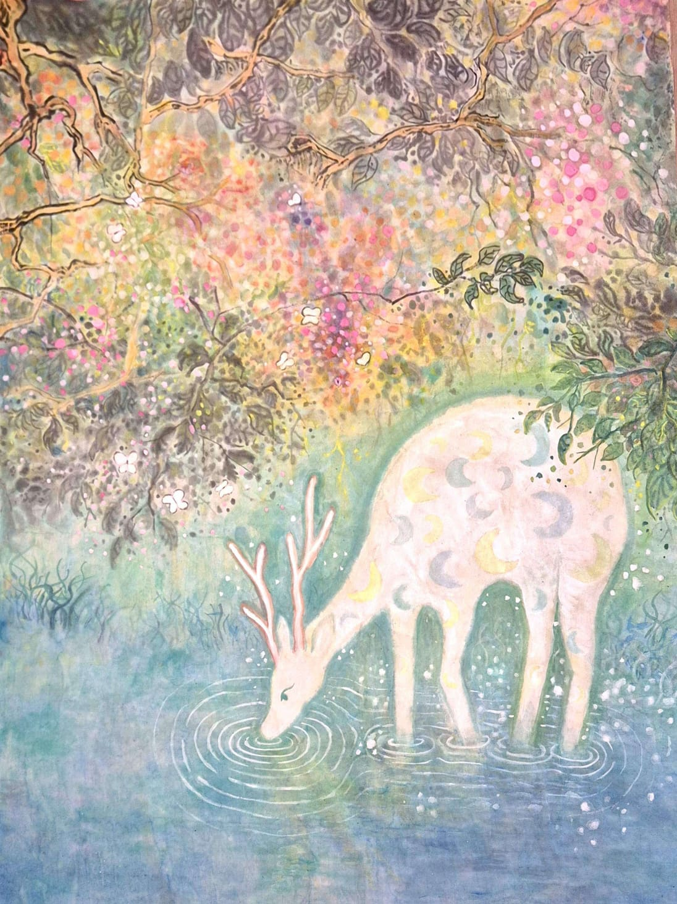

Nine-Colored Deer
2026About the Artwork
This is a painting of the nine-colored deer, based on a 1500 year old mural from the Mogao Caves in Dunhuang, Gansu Province, northwest China. It is based on a Buddhist Jataka tale that follows a magical radiant deer who saves a drowning man from a river. In return for saving his life, the deer asks the man for only one favor which is to never reveal its hiding place to anyone. One day, the kingdom's queen dreams of the magnificent creature and falls ill out of desire for its skin. The king then offers a massive reward and the rescued man breaks his promise out of greed, leading the king's hunters to the deer. When cornered, the deer does not flee. Instead, it speaks to the king, calmly recounting how it saved the ungrateful man. Touched by the truth, the king spares the deer. In the end, the traitorous man receives karmic retribution, often depicted as suffering a miserable fate or drowning/contracting sores. This story shows the importance of moral integrity, gratitude, and the consequences of greed and betrayal.
About the Artist
Kennard is an artist who loves cats.